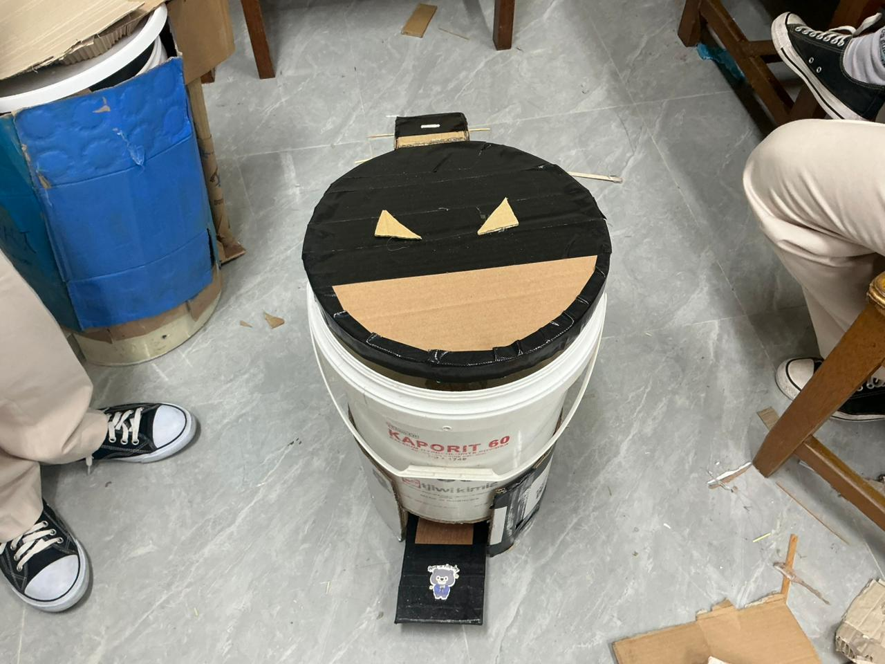
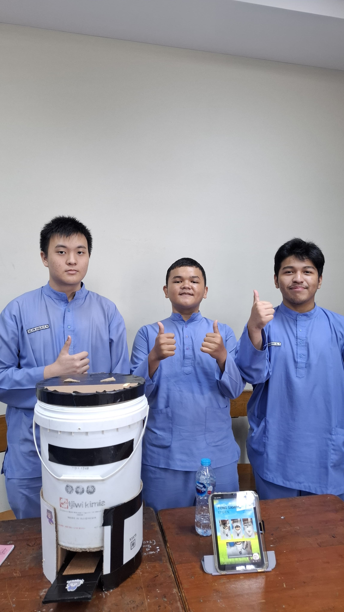
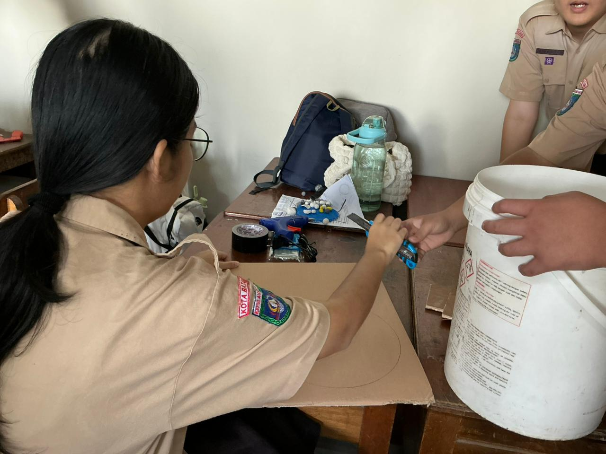
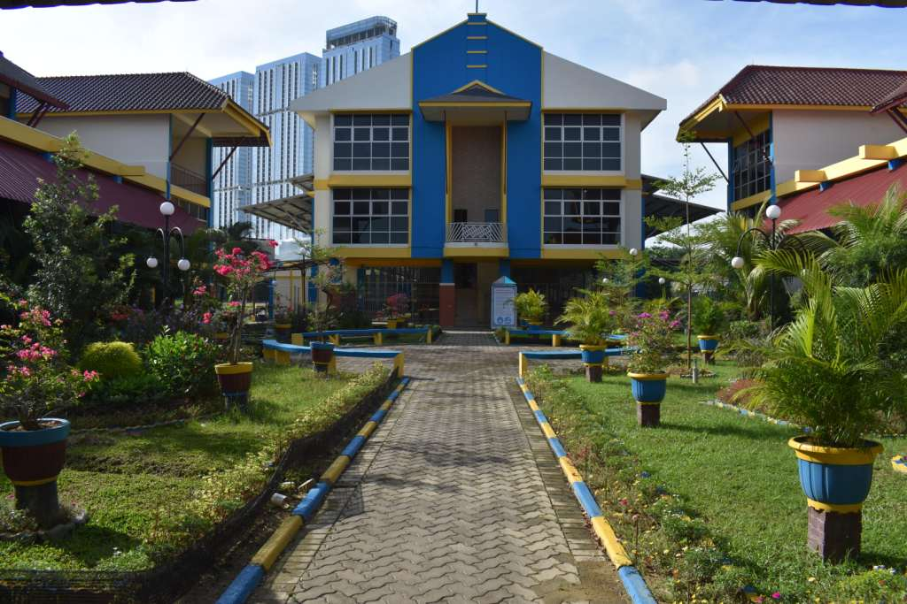
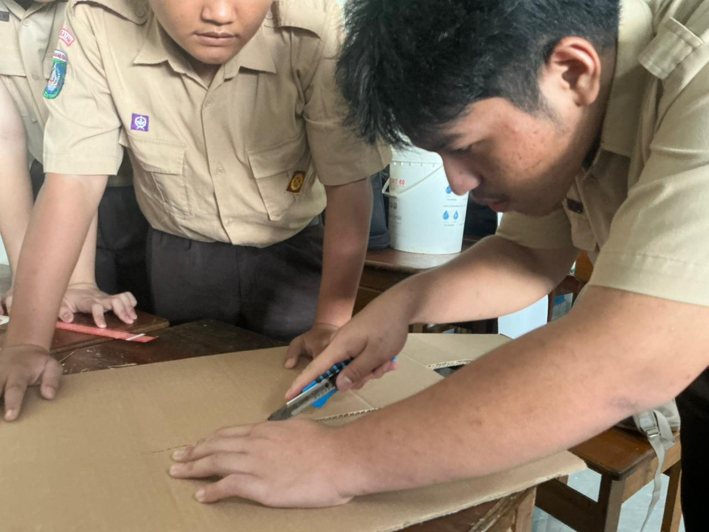
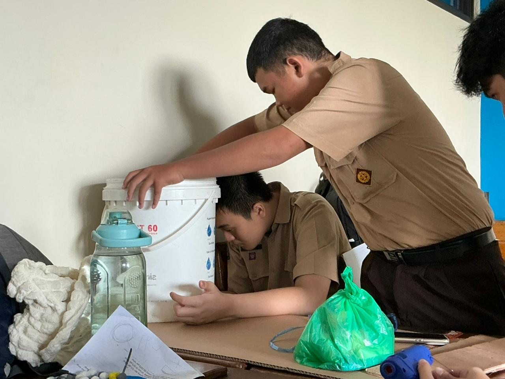
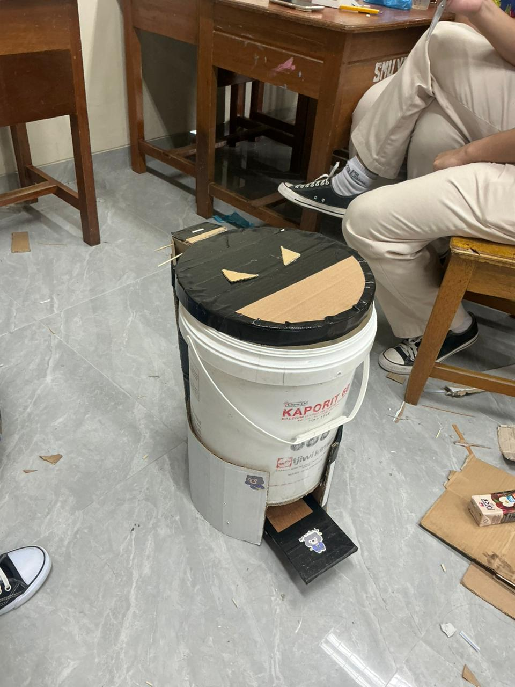

Proyek Kokurikuler STEM — SMAK Yos Sudarso Batam


Siswa XI.E SMA Katolik Yos Sudarso Batam. Dalam proyek kokurikuler ini, saya dan tim merancang Tong Sampah Efisien. Fokus kami adalah menciptakan wadah sampah yang fungsional dengan memanfaatkan material yang ada di sekitar kita.
Berdasarkan pengamatan kami di SMAK Yos Sudarso Batam, tujuan proyek ini adalah:

Kami mulai dengan merenungkan masalah sampah dan membuat sketsa awal pada kardus.

Melakukan pengamatan di lapangan sekitar SMAK Yos Sudarso untuk menentukan lokasi penempatan yang paling efektif.

Menentukan teknik pemotongan kardus yang tepat agar penutup tong dapat terbuka dengan lancar.

Tahap perakitan inti: Menyatukan ember, kardus, dan penguat mekanis secara bersama-sama.

Tahap akhir untuk memastikan fungsi injakan berkerja dan menjaga estetika tong sebelum dipublikasikan.
| Nilai | Penerapan dalam Proyek |
|---|---|
| Sukarela | Anggota tim dengan senang hati mengerjakan tugas meski di luar jam pelajaran. |
| Persatuan | Meskipun memiliki pendapat berbeda saat desain, kami tetap bersatu untuk satu hasil. |
| Kesatuan | Menyadari bahwa satu bagian saja yang gagal (seperti pedal), maka seluruh tong tidak efisien. |
| Sosialisasi | Berkomunikasi terus-menerus mengenai ketersediaan alat seperti lem tembak dan gunting. |
| Kekeluargaan | Bekerja dengan suasana akrab dan saling mendukung satu sama lain. |
| Tolong-menolong | Saling memegang material saat teman yang lain sedang memotong agar tetap presisi. |
Proyek Tong Sampah Efisien ini membuktikan bahwa kreativitas dan kerjasama adalah kunci dalam memecahkan masalah lingkungan. Dengan mengikuti alur STEM, kami berhasil mengubah limbah menjadi solusi fungsional bagi SMAK Yos Sudarso Batam.